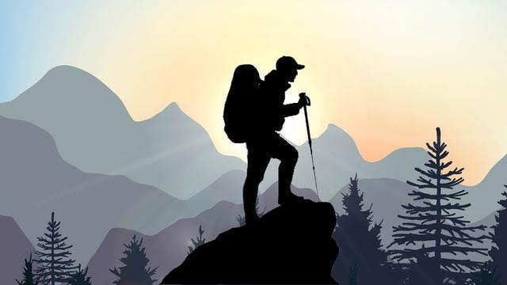

Pendakian adalah kegiatan yang melibatkan naik ke ketinggian tertentu, sering kali menuju puncak gunung atau pegunungan. Ini adalah kegiatan yang menantang, membutuhkan fisik yang kuat, ketahanan mental, dan semangat petualangan yang tinggi. Bagi banyak orang, pendakian adalah cara untuk mengeksplorasi alam, menguji keterampilan, dan mendapatkan pengalaman yang tak terlupakan.
Selain menjadi tantangan fisik, pendakian juga memberikan kesempatan untuk terhubung dengan alam dan mengagumi keindahan lanskap yang menakjubkan. Pemandangan yang menakjubkan, seperti lembah hijau yang luas, danau yang indah, serta puncak gunung yang menjulang tinggi, adalah hadiah yang luar biasa bagi para pendaki yang berhasil mencapainya.
Salah satu aspek menarik dari pendakian adalah persiapan yang diperlukan sebelum memulai petualangan. Pendaki perlu merencanakan rute pendakian, mengumpulkan peralatan yang diperlukan, dan mempelajari teknik dan strategi yang diperlukan untuk melakukan pendakian dengan aman. Mereka juga perlu memperhatikan kondisi cuaca dan memahami potensi bahaya yang mungkin mereka hadapi selama perjalanan.
Selama pendakian, pendaki akan menghadapi berbagai tantangan, seperti medan yang sulit, perubahan suhu yang drastis, dan keterbatasan persediaan makanan dan air. Namun, setiap tantangan itu juga menjadi kesempatan untuk tumbuh dan menguji batas diri. Ketika menghadapi rintangan dan berhasil melaluinya, pendaki merasakan kepuasan dan kebanggaan yang luar biasa.
Selain itu, pendakian juga membawa manfaat kesehatan yang signifikan. Aktivitas fisik yang intens saat melakukan pendakian membantu meningkatkan kebugaran kardiovaskular, menguatkan otot, dan meningkatkan kepadatan tulang. Pendakian juga mengajarkan pentingnya ketahanan mental dan keterampilan pemecahan masalah, karena pendaki sering dihadapkan pada situasi yang membutuhkan kecermatan dan ketekunan dalam pengambilan keputusan. Penting untuk diingat bahwa pendakian adalah kegiatan yang memerlukan persiapan yang matang dan perhatian terhadap keselamatan. Pendaki harus selalu menghormati alam dan mengikuti prinsip-prinsip pendakian yang bertanggung jawab, termasuk meninggalkan jejak yang minimal, merawat flora dan fauna setempat, dan mematuhi aturan dan regulasi yang berlaku di area pendakian. Bagi mereka yang tertarik untuk mencoba pendakian, langkah awal yang baik adalah mempelajari tentang tujuan pendakian yang diinginkan, memperoleh pengetahuan tentang keterampilan dan teknik yang diperlukan, dan bergabung dengan komunitas pendaki yang berbagi pengetahuan dan pengalaman. Pendakian adalah pengalaman yang menarik dan penuh tantangan. Setiap pendakian membawa cerita dan kenangan yang berbeda-beda. Ketika Anda berdiri di puncak gunung dan melihat keindahan alam di sekitar Anda, Anda akan merasakan kepuasan dan rasa kagum yang tak terlukiskan. Pendakian adalah perjalanan yang akan mengubah Anda dan membuka pintu menuju petualangan baru yang menakjubkan.
 Eksplorasi Alam Terbuka di Taman Nasional Yellowstone
Eksplorasi Alam Terbuka di Taman Nasional Yellowstone